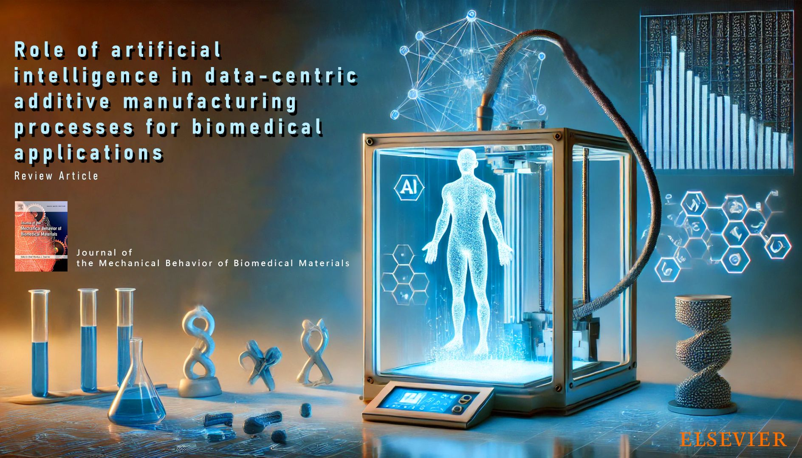
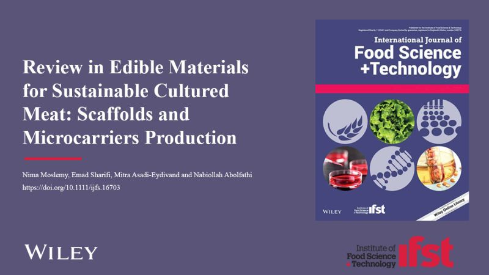

School of Engineering and Physical Sciences
Heriot-Watt University
Greetings, I am Nima Moslemy, a professional with expertise in additive manufacturing. I am dedicated to advancing science and technology within this field and continuously seek opportunities to contribute to its growth and innovation.
I am currently a post-graduate researcher at Heriot-Watt University, working on a project funded by the EPSRC.
Heriot-Watt University, Edinburgh, UK
Bio Fabrication Lab (BFL), Amirkabir University of Technology, Iran
CMFRC, Shariati's Hospital, Tehran, Iran
Heriot-Watt University, Edinburgh, UK
Supervisors: Dr. F. Shalchy, Dr. A. Ozel, Dr. M. Ikhlaq
Amirkabir University of Technology
"Design and fabrication of edible scaffolding for use in cultured meat by 3D bioprinting."
Amirkabir University of Technology
"Design and manufacture of RTV-2 silicone 3D printer."
Journal of the Mechanical Behavior of Biomedical Materials, Volume 166, June 2025
International Journal of Food Science and Technology
[Under Review]

Review of Artificial Intelligence in Data-Centric Additive Manufacturing Processes for Biomedical Applications.
Access Network
Development of edible scaffolds and microcarriers focusing on bio-materials and their advanced applications.
Access NetworkHeriot-Watt University
Edinburgh, UK